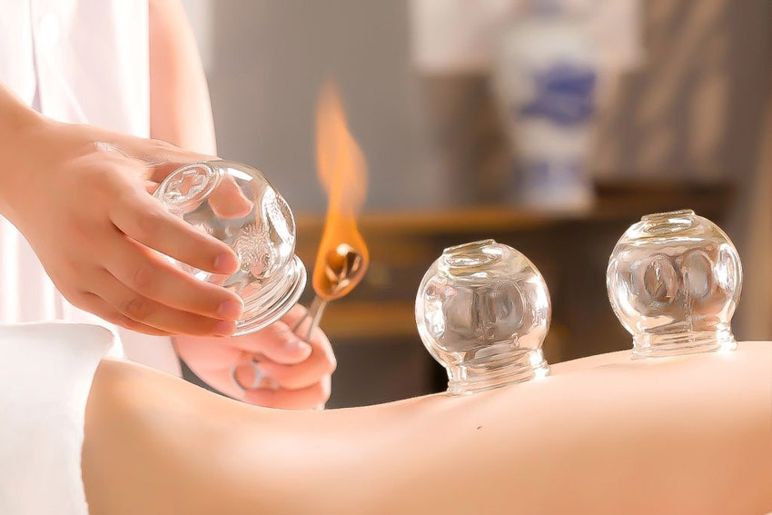

Masaje holístico
Hablamos de los masajes holísticos como un tipo de masaje que busca la estabilidad tanto emocional como física. Un proceso de relajación en el que se trabaja el todo en el ser humano hasta lograr una perfecta armonía entre su energía tanto mental como corpórea. En un mundo donde la vida va cada vez más deprisa, los niveles de exigencia son mayores y los trastornos por ansiedad son más comunes, los masajes holísticos ganan una importancia vital. Con ello se logra bajar los niveles de estrés y ansiedad. De este modo, se puede evitar que el paciente acabe desarrollando enfermedades cardiovasculares, depresión o presión arterial, entre otras.
Masaje descontracturante relajante
Un masaje descontracturante, como la propia palabra indica, se utiliza para relajar la musculatura y disolver las contracturas que se producen por el estrés, las malas posturas, la falta de descanso o una vida demasiado sedentaria.Es un masaje algo más fuerte que uno de tipo sólo relajante, aunque no tiene porqué resultar más doloroso de lo imprescindible, sólo lo natural mientras se trabaja la zona que está tensa.

Acupuntura
Usamos la medicina tradicional china de la acupuntura para acompañarlo en su camino hacia la curación desde todas las direcciones.
Drenaje linfático
Masaje, suave y ligero, que se aplica sobre el sistema circulatorio y cuyo objetivo es movilizar los líquidos del organismo para favorecer la eliminación de las sustancias de deshecho que se acumulan en el líquido que ocupa el espacio entre las células.
Facial limpieza profunda
La limpieza facial profesional tiene como objetivo limpiar en profundidad la piel para eliminar células muertas, espinillas e impurezas, y darle energía y vitalidad al rostro.
Masaje con ventosas
En la aplicación de ventosas, se pegan al cuerpo vasos de succión de diferentes tamaños. La succión trae sangre estancada a la superficie de la piel y mejora la circulación a través de los tejidos, lo que puede aumentar la velocidad de sanación, además de otros beneficios.